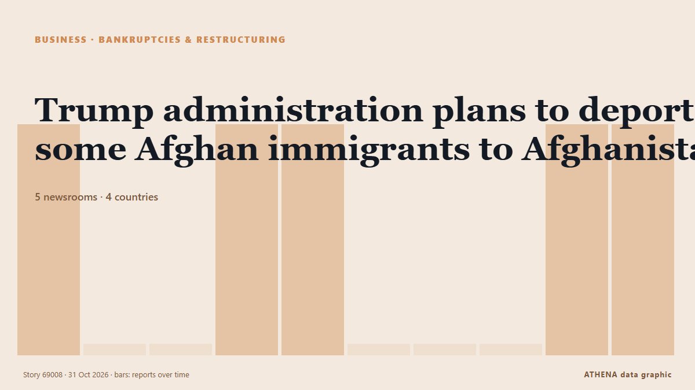

Банкротства и реструктуризация
| 18 окт. | 0 |
|---|---|
| 19 окт. | 0 |
| 20 окт. | 0 |
| 21 окт. | 0 |
| 22 окт. | 0 |
| 23 окт. | 0 |
| 24 окт. | 1 |
| 25 окт. | 0 |
| 26 окт. | 2 |
| 27 окт. | 2 |
| 28 окт. | 2 |
| 29 окт. | 1 |
| 30 окт. | 2 |
| 31 окт. | 0 |
Заголовки приводятся на английском языке, как они были опубликованы.

Trump administration plans to deport some Afghan immigrants to Afghanistan
Over 150 Afghan immigrants are expected to be deported, The New York Times reported. из The Straits Times
4.7Значимость
1.4Риск · низкий
78%Уверенность
Polish city halts ties with Lviv amid dispute over UPA commemorations
The move adds to tensions between the two countries after Lviv's council adopted decrees on Oct. из Kyiv Independent
Man used AI to set up illegal booze operation. Now he is linked to 13 deaths in Madhya Pradesh
Highlighting the mass deaths in various tragedies across Madhya Pradesh in the past year, Congress leader Jitu Patwari said the State had become the “biggest den of mass deaths” из The Hindu
Russia is selling Africa dependence disguised as partnership
As African leaders gather in Moscow, Russia is securing resources and protecting rulers at the expense of their people. из Al Jazeera English
Storied Paris department store BHV Marais seeks bankruptcy protection
BHV Marais said the move was aimed at protecting its operations and jobs. из The Straits Times